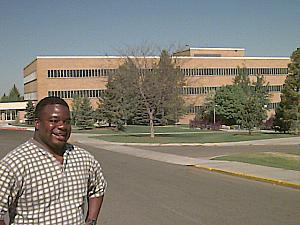

Joseph Fielding Smith Building |
|
 |
The Joseph Fielding Smith Building is probably the busiest on campus. This classroom building houses many academic departments. These include Accounting, Business, Computer Information Systems, English, History, Office Education, and Political Science. Many of the general education courses required for graduation are taught in the Smith Building. |